Photo Quest
A phone web app for a group outing's photo challenges. Groups send photos for challenges, the committee judges them and enters station game scores, and everyone follows a live scoreboard and gallery. These are its screens, taken from the demo.
The demo's committee passphrase is on its sign-in screen. Photos you send there show only on your phone, and the demo resets every night.
For groups
Each group opens its own page and sends photos for challenges between stations.
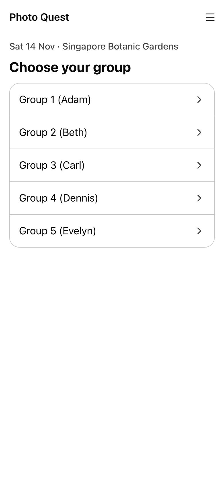
Pick your group Every group is listed, so nobody needs a QR code.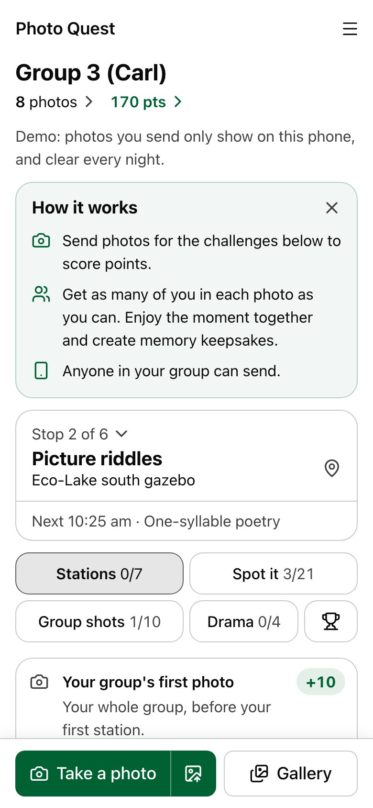
Your group's page Where to be now, what's next, and your points.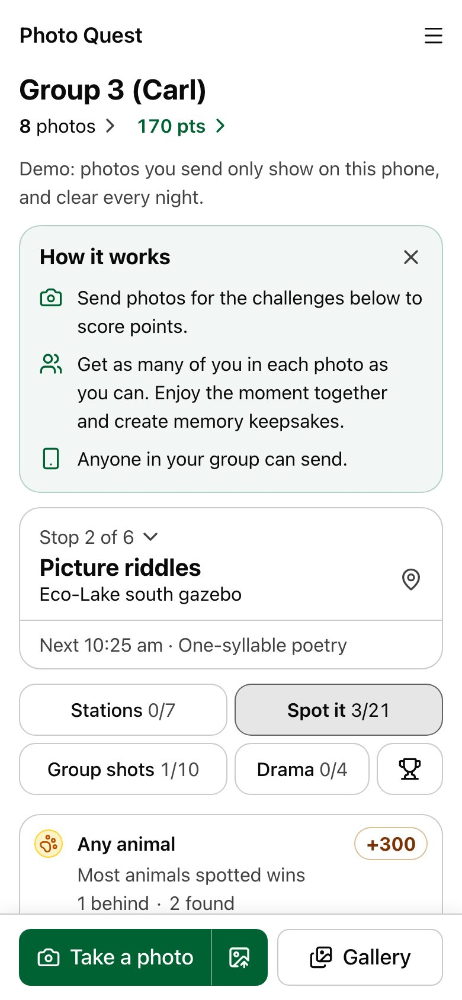
Challenges In tabs, each with its points and whether it's done.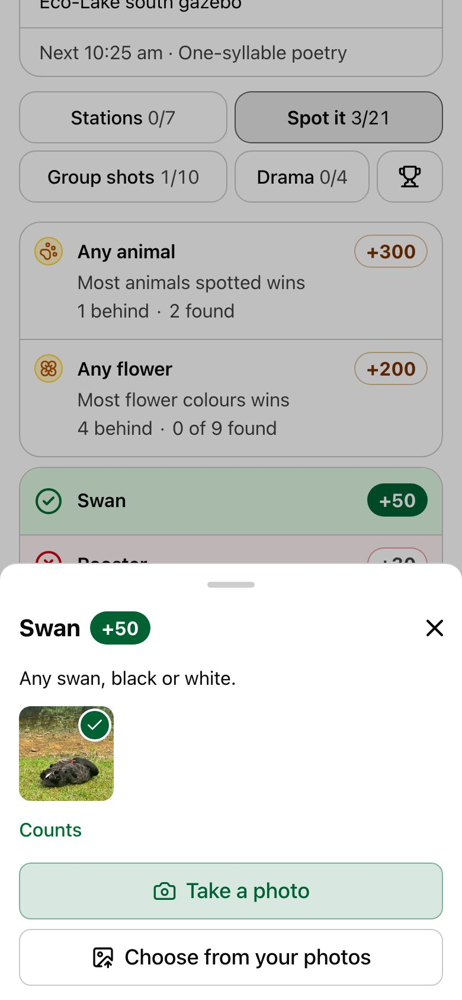
One challenge Take a photo or pick one, and see whether it counts.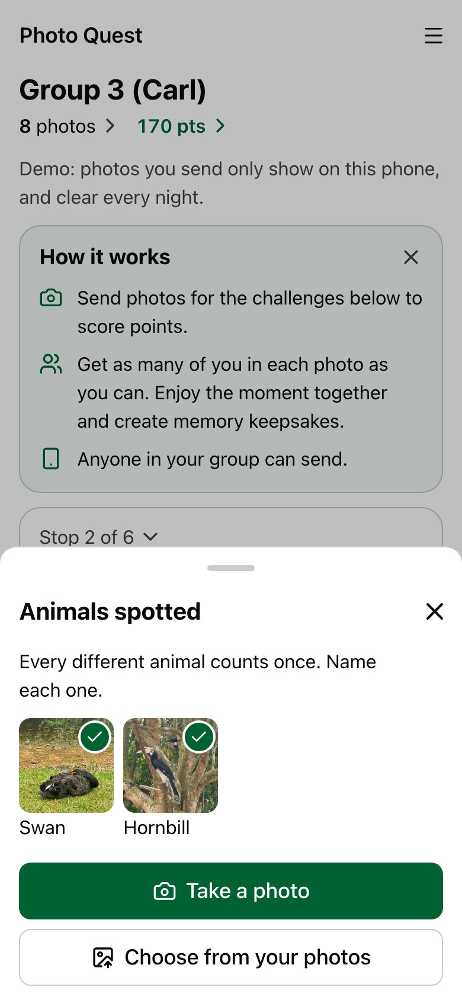
Animals spotted Name each animal. Every new one counts towards the award.
For everyone
Anyone with the app link can follow along.
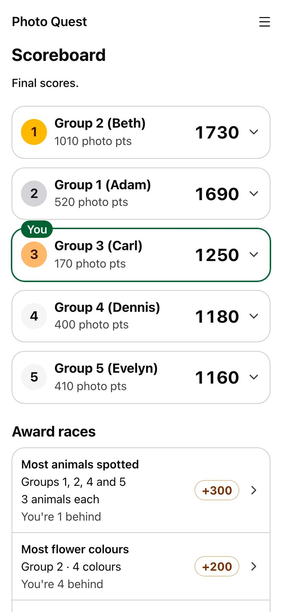
Scoreboard Live, with the award races under it.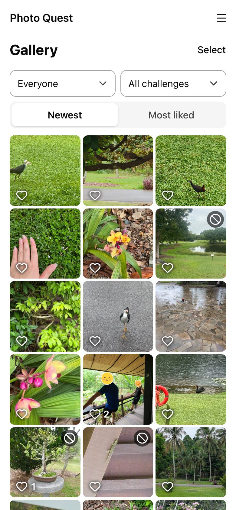
Gallery Every photo, newest or most liked first.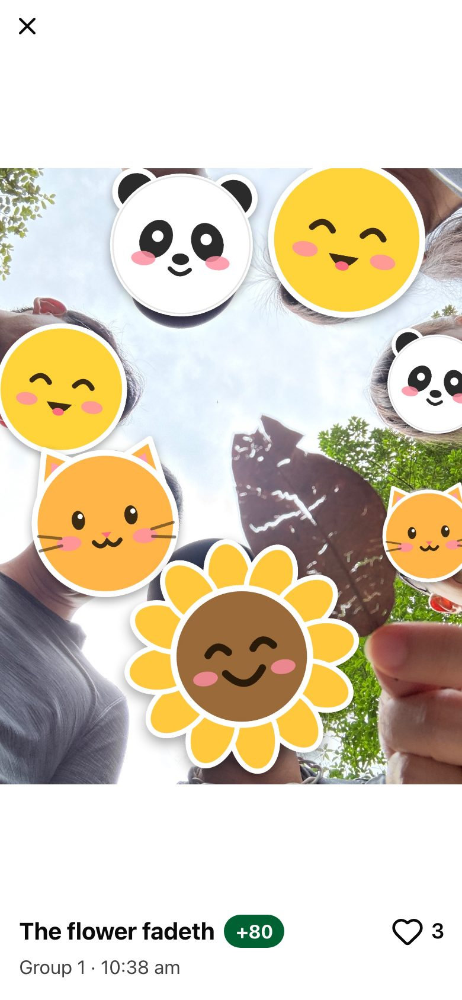
One photo Full screen. Swipe for the next, tap the heart to like it.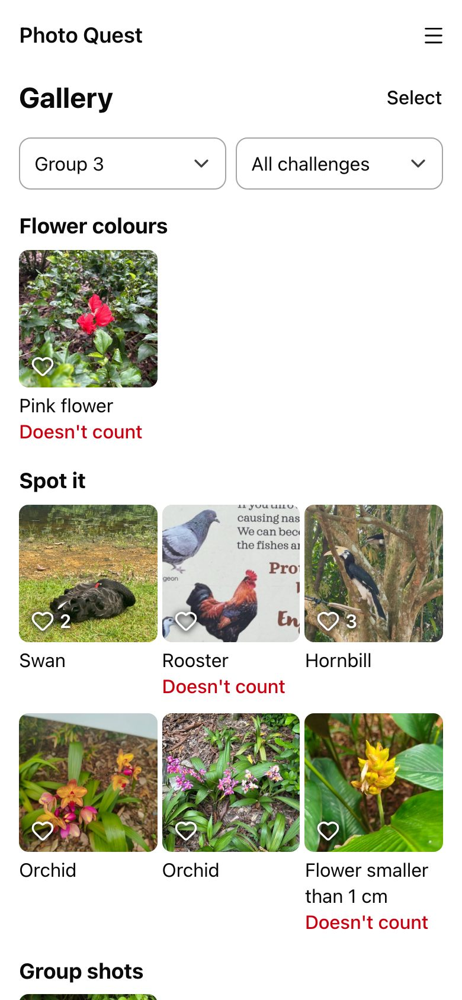
One group's photos Laid out by challenge.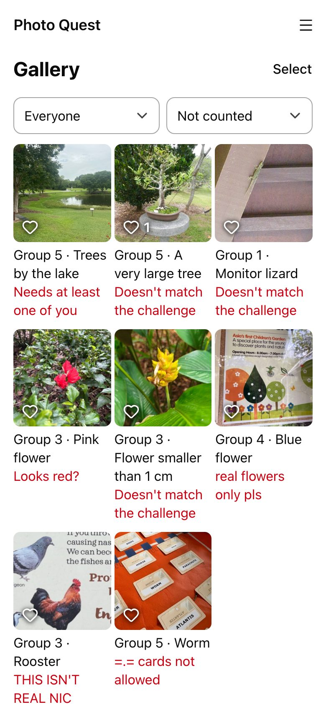
Doesn't count Photos a judge turned down, with the reason.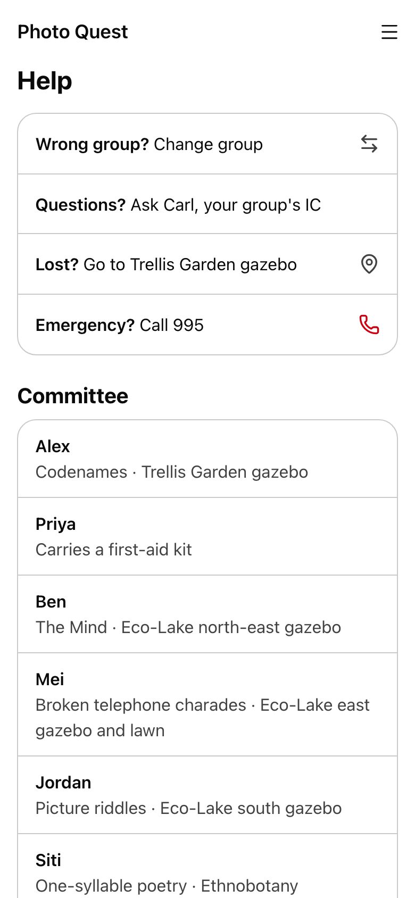
Help Who to ask, where to go, and the committee's stations.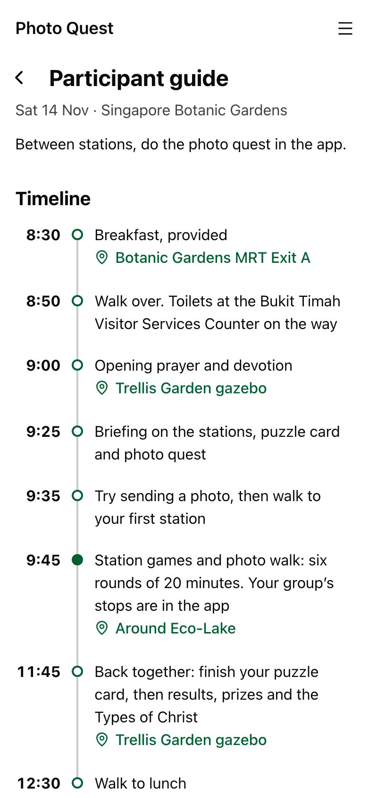
Participant guide The morning's timeline and how scoring works.
For the committee
One shared passphrase, no accounts.
Sign in The committee's passphrase, once per phone.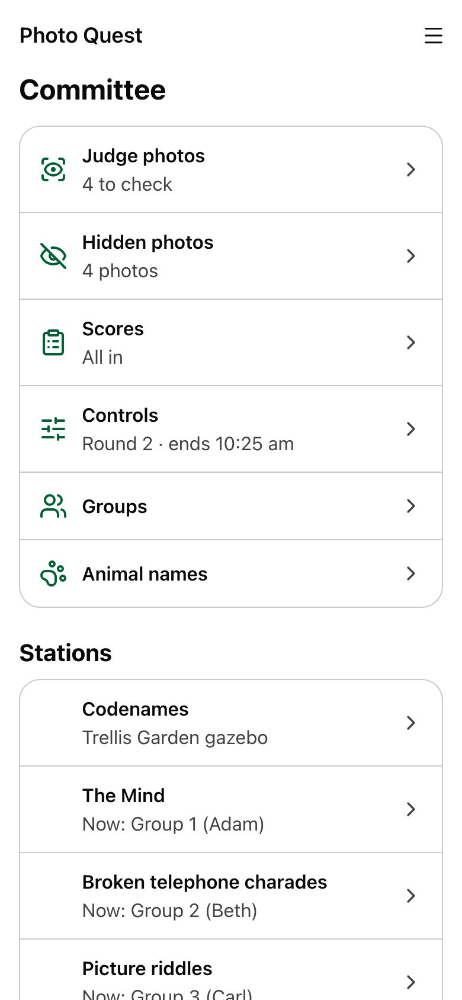
Committee home What needs doing, and who's at each station.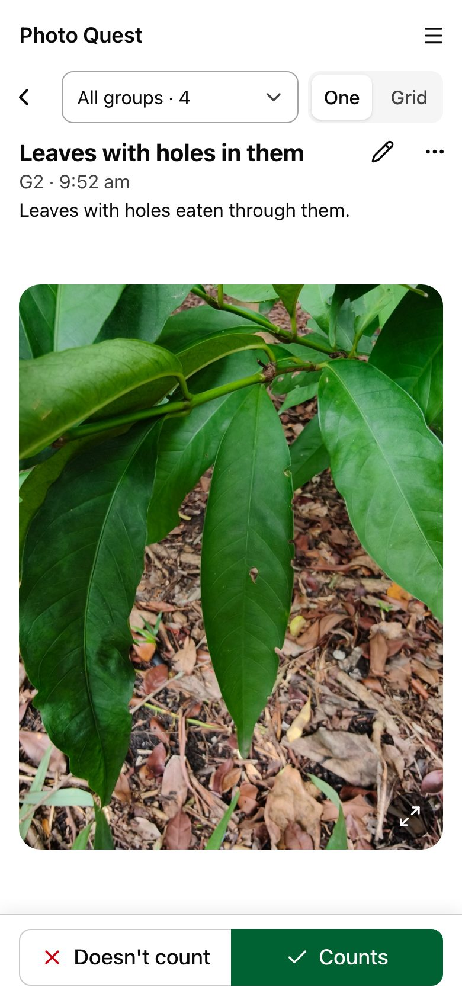
Judge photos One at a time, or as a grid by challenge.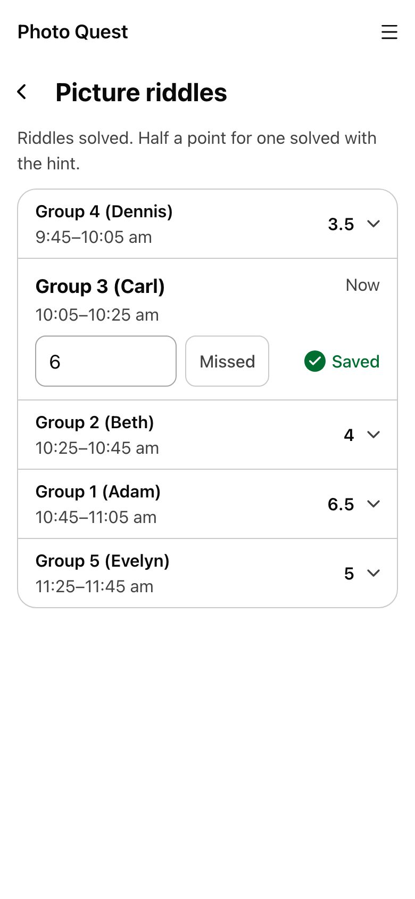
Station scores In visiting order. Scores wait on the phone when there's no signal.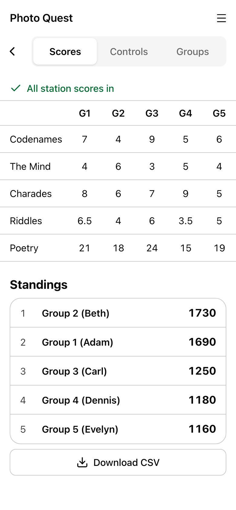
Manage Every score in one grid to check against the paper sheets.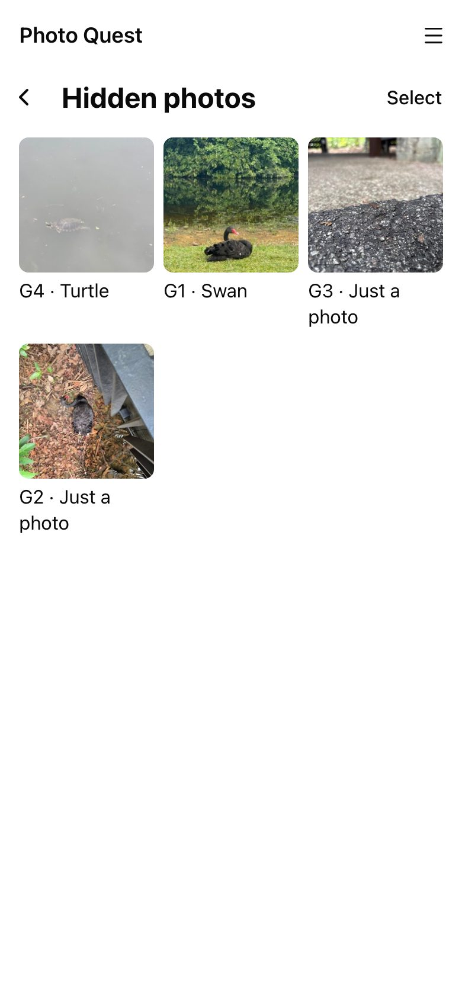
Hidden photos Out of the gallery. Unhide them, or delete them for good.
Screens at 390 by 844, an iPhone's size, captured with scripts/screens.ts. Source on GitHub , Apache 2.0. Photos by people at the outing, faces under stickers; the bonsai is by Lobster1 on Wikimedia Commons , resized, under its own licence, CC BY-SA 3.0 .